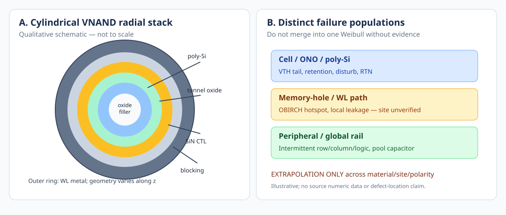

Executive Summary / 핵심 요약
ISTFA 2026의 NAND transient fault, MH-to-WL OBIRCH, global pool-capacitor defect 사례 세 건과 GaN electrothermal-mechanical in-situ aging 연구를 신규 evidence로 통합했다. 다섯 번째 IRPS FE NAND 논문은 이번 주 발표가 아닌 archive-gap 보완이며, anode-hole injection과 top-insulator breakdown의 trade-off를 추가한다. 공개 초록만 확인된 항목은 정량 범위를 unknown으로 남긴다.
English. Three ISTFA 2026 NAND case studies—transient faults, MH-to-WL OBIRCH and buried global pool-capacitor defects—are integrated with a new GaN electrothermal-mechanical aging diagnostic. The fifth IRPS FE-NAND item is explicitly an archive-gap addition, not a new weekly publication. Quantitative ranges absent from accessible abstracts remain unknown.
Top-5 Comparison / 비교표
| # | Date | Actual article title | Classification |
|---|---|---|---|
| 1 | 2026-10-04 | Understanding the Root Cause of Transient Failures in NAND-Type 3D Flash Memory | ISTFA 2026 · new primary source |
| 2 | 2026-10-04 | OBIRCH Hotspot Detection via MH-to-WL Biasing for 3D NAND Memory Hole Defect Isolation | ISTFA 2026 · new primary source |
| 3 | 2026-10-04 | Localization of Gate Oxide Defects within Pool Capacitors in NAND-type 3D Flash Memory | ISTFA 2026 · new primary source |
| 4 | 2026-09-30 | Multiphysics Reliability Analysis of Degradation Mechanisms in GaN HEMTs: An in Situ Diagnostic Approach | IEEE TPEL Early Access · newly integrated |
| 5 | 2026-03-22–26 | High-Field Breakdown Mechanism Limiting Write Endurance in Ferroelectric FET for 3D NAND | IRPS 2026 · archive-gap (not newly published) |
Physical Domain Gate / 물리 적용 범위
원통형 VNAND의 radial dielectric stack은 E_i(r)=λ/(2πLε_i r), V=λ/(2πL)Σln(r_i+1/r_i)/ε_i를 출발점으로 삼는다. 이는 완전한 동축·선형 유전체에서만 성립한다. WL edge, hole taper, local defect, poly-Si grain boundary, SSL/GSL 및 3D fringing이 지배적이면 TCAD나 측정으로 재검증해야 한다.
English. For cylindrical VNAND, begin with radial dielectric relations E_i(r)=λ/(2πLε_i r) and V=λ/(2πL)Σln(r_i+1/r_i)/ε_i, valid only for an ideal coaxial linear dielectric stack. WL edges, hole taper, local defects, poly-Si grain boundaries, SSL/GSL and 3D fringing require TCAD or measurement-based revalidation.

1. Understanding the Root Cause of Transient Failures in NAND-Type 3D Flash Memory
1. Source / What is new
Sandisk 연구진은 NAND 주변회로의 row, column, peripheral logic에서 발생하는 세 부류의 간헐성 결함을 분석했다. 이번 주의 신규성은 셀 VTH 열화와 다른, 실제 시스템의 transient failure population을 신뢰성 모델에 추가하는 것이다.
English. Sandisk researchers analyze three classes of intermittent failures in NAND row, column and peripheral logic. The new contribution to this knowledge base is a transient system-level failure population distinct from cell VTH degradation.
2. Physical Structure
대상은 원통형 CTL 셀 자체가 아니라 array 밖의 row decoder, column path, peripheral logic이다. 공개 초록에는 결함 재료·정확한 위치·bias와 파형이 없다.
English. The investigated structures are row circuitry, column circuitry and peripheral logic outside the cylindrical charge-trap array. Defect materials, exact sites, bias and waveform are not disclosed in the public abstract.
3. Step-by-step Physical Causal Chain
잠재 결함이 특정 전압·온도·상태에서만 전도 또는 타이밍 변화를 유발하고, 그 결과 글로벌 신호나 read/write 경로에 순간 오류가 발생할 수 있다. 이 단계별 연결은 논문이 개별 회로 원인을 공개하지 않았으므로 Engineering Inference이다.
English. A latent defect may become conductive or timing-critical only in particular bias, thermal or logic states, producing a transient read/write-path fault. This specific causal chain is Engineering Inference because the public abstract does not identify each circuit defect.
4. Equation & Physical Interpretation
검출 모델 후보는 Pdetect=1−(1−p)^n 이다. p는 한 번의 독립 관측에서 fault가 발현될 확률(무차원), n은 독립 반복 횟수(회)이다. p가 작을수록 필요한 반복 횟수가 증가한다. 상관된 반복에는 사용할 수 없다.
English. A candidate detection model is Pdetect=1−(1−p)^n, where p is the dimensionless per-trial manifestation probability and n is the number of independent observations. Small p requires more repetitions. Correlated trials violate the model assumptions.
5. Dominant Parameters / Scaling
전압·온도·전원 ramp·clock phase·logic activity와 dwell time이 p를 좌우할 수 있다. 단일 정적 screen에서 관측되지 않는다고 결함이 없다는 뜻은 아니다.
English. Voltage, temperature, power ramp, clock phase, logic activity and dwell time may affect p. A defect escaping a single static screen is not evidence of defect absence.
6. Competing Mechanisms / Signatures
Cell retention tail은 program-state/time dependence를, peripheral intermittent fault는 state/clock/rail dependence를 보일 가능성이 있다. 둘 다 RBER를 올리더라도 failure signature는 구분해야 한다.
English. Cell retention tails may follow program-state and time dependence, whereas peripheral intermittent faults may track logic state, clock or supply rails. The two can raise RBER but require different signatures.
7. VNAND / HV Material & Structure Translation
WL metal RC, row decoder, sense amplifier, SSL/GSL driver 및 HV charge-pump path와 연결한다. 원통형 poly-Si/ONO 셀에서 측정된 charge loss로 직접 환산하지 않는다.
English. Translate to WL-metal RC, row decoder, sense amplifier, SSL/GSL drivers and HV charge-pump paths. Do not convert peripheral failures directly into charge loss in cylindrical poly-Si/ONO cells.
8. Reported Validation Data vs Engineering Inference
Source-reported: 세 회로 영역의 transient defect case study. 공개 초록에는 defect count, stress 조건, 검출률, DPPM 개선량이 없다. 제시한 확률식과 조건별 메커니즘은 Engineering Inference이다.
English. Source-reported: case studies of transient defects across three circuit regions. Defect counts, stress conditions, detection rates and DPPM improvement are unavailable in the abstract. The probability model and conditional mechanisms are Engineering Inference.
9. Failure Mode / Weibull / Tail
가능한 failure mode는 intermittent open, resistive short, leakage, timing violation, read reference upset, driver instability다. 실제 분류는 논문 본문 없이는 확정할 수 없다. Weibull β/η는 공개되지 않았다.
English. Candidate failure modes include intermittent open, resistive short, leakage, timing violation, read-reference upset and driver instability; these are not confirmed case identities. Weibull β and η are not reported publicly.
10. Recommended DOE & Expected Signatures
DOE: row/column/periphery를 분리해 power ramp × clock/activity × T × supply droop × repeated reads를 교차한다. error address·rail transient·timing margin·local I–V를 함께 저장하고 조건 의존성이 있는지 본다.
English. DOE: cross power ramp, clock/activity, temperature, supply droop and repeated reads separately for row/column/periphery. Capture failing addresses, rail transients, timing margin and local I–V to test state dependence.
11. Counterargument / Critical Boundary
Critical boundary: 간헐성 검출 통계는 TDDB time-to-breakdown과 다르다. 반복 횟수와 관측 간 상관을 무시하면 false-negative rate가 잘못 계산된다. 논문 상세 원인 미공개를 unknown으로 유지한다.
English. Critical boundary: intermittent-detection statistics are not TDDB time-to-breakdown statistics. Ignoring correlation between observations misestimates false negatives. Unpublished defect identities remain unknown.
2. OBIRCH Hotspot Detection via MH-to-WL Biasing for 3D NAND Memory Hole Defect Isolation
1. Source / What is new
새로운 MH-to-WL biasing으로 OBIRCH hotspot 검출 감도를 높이고, 파괴적 sample preparation 이후 반복적인 hotspot 검출을 실험적으로 보였다고 보고한다.
English. A new memory-hole-to-word-line biasing method enhances OBIRCH hotspot sensitivity; the authors report repeatable experimental hotspot detection after destructive sample preparation.
2. Physical Structure
MH는 poly-Si channel, tunnel oxide, SiN CTL, blocking dielectric와 WL metal이 둘러싼 원통형 channel-hole 구조다. 그러나 실제 MH–WL fault가 어느 층을 관통하는지는 초록에서 확정되지 않는다.
English. The memory hole is a cylindrical stack comprising poly-Si channel, tunnel oxide, SiN CTL, blocking dielectric and surrounding WL metal. The abstract does not establish which specific layer is crossed by the defect.
3. Step-by-step Physical Causal Chain
결함이 MH와 WL 사이에 국부 전도 경로를 제공한다면 인가 bias가 결함에서 Joule heating을 만들고, 레이저 열 자극에 대한 전류 응답이 hotspot으로 나타날 수 있다. 이 상세 전류 경로는 Engineering Inference이다.
English. If a defect creates a local MH-to-WL conductive path, the applied bias may generate Joule heating and a laser-induced current response at the hotspot. This detailed current-path interpretation is Engineering Inference.
4. Equation & Physical Interpretation
일반적 저항성 근사에서 Plocal≈V²Gdefect [W]이며 Gdefect는 국부 conductance [S]다. OBIRCH contrast는 ΔI≈(∂I/∂T)ΔT [A]로 쓸 수 있으나, source fitting equation이 아니고 비선형 trap transport에서는 성립 범위가 좁다.
English. For an ohmic local path, Plocal≈V²Gdefect [W], with defect conductance Gdefect [S]. A first-order OBIRCH contrast is ΔI≈(∂I/∂T)ΔT [A]. Neither is a source-fitted equation; nonlinear trap transport narrows validity.
5. Dominant Parameters / Scaling
원통형 동축 다층 유전체의 근사에서는 V=λ/(2πL)Σ[ln(ri+1/ri)/εi], Ei(r)=λ/(2πLεir)다. λ [C/m], L [m], ε [F/m], r [m]. 실제 WL edge와 결함 형상에서는 3D fringe field가 우세할 수 있다.
English. In an ideal coaxial multilayer approximation, V=λ/(2πL)Σ[ln(ri+1/ri)/εi] and Ei(r)=λ/(2πLεir). Here λ is charge per length [C/m], L is length [m], ε is permittivity [F/m], and r is radius [m]. Real WL edges and defects may be fringe-field dominated.
6. Competing Mechanisms / Signatures
Competing signatures: oxide leakage는 MH–WL bias와 temperature에, WL-metal defect는 line resistance에, CTL charge redistribution은 delay/pattern에, sample-prep artifact는 milling geometry에 더 민감할 수 있다.
English. Competing signatures: oxide leakage may track MH–WL bias and temperature; WL-metal defects track line resistance; CTL redistribution tracks delay/pattern; preparation artifacts track milling geometry.
7. VNAND / HV Material & Structure Translation
SSL/GSL와 WL select state, stack height, channel-hole CD, blocking oxide/high-k 및 WL-metal edge geometry를 DOE 축으로 둔다. 정상 cell erase GIDL current와 직접 혼동하지 않는다.
English. Use SSL/GSL and WL select state, stack height, channel-hole CD, blocking oxide/high-k and WL-metal edge geometry as DOE axes. Do not confuse this hotspot diagnostic with normal GIDL erase current.
8. Reported Validation Data vs Engineering Inference
Source-reported: advanced 3D NAND에서 repeatable hotspot after destructive preparation. 감도 증가율, bias magnitude, oxide thickness, sample N, defect cross-section은 공개 초록에서 unknown이다.
English. Source-reported: repeatable hotspot detection after destructive preparation in advanced 3D NAND. Sensitivity gain, bias magnitude, oxide thickness, sample N and defect cross-section are unknown in the public abstract.
9. Failure Mode / Weibull / Tail
Failure mode는 MH–WL leakage/short, dielectric weak spot, WL edge defect 등이 후보지만 실제 물리 위치는 단정하지 않는다. Localized catastrophic fault는 Weibull TDDB population과 동일하지 않다.
English. Candidate modes include MH–WL leakage/short, dielectric weak spot and WL-edge defects; their actual physical locations are not established. A localized catastrophic defect is not automatically a Weibull TDDB population.
10. Recommended DOE & Expected Signatures
DOE: MH–WL bias polarity × magnitude × selected WL × layer × temperature를 sweep하고 OBIRCH map, I–V, stress-induced leakage, TEM/FIB cross-section을 cross-register한다. 비파괴 pre-map과 post-preparation map을 비교한다.
English. DOE: sweep MH–WL bias polarity, magnitude, selected WL, layer and temperature; cross-register OBIRCH maps with I–V, stress-induced leakage and TEM/FIB cross sections. Compare nondestructive pre-maps with post-preparation maps.
11. Counterargument / Critical Boundary
Critical boundary: destructive preparation은 결함 상태를 바꿀 수 있으므로 screen yield 또는 intrinsic TDDB lifetime으로 직접 환산하지 않는다. 동축 식은 ideal radial stack에만 적용한다.
English. Critical boundary: destructive preparation may alter the defect state, so the result cannot directly quantify screen yield or intrinsic TDDB lifetime. The coaxial equation applies only to an ideal radial stack.
3. Localization of Gate Oxide Defects within Pool Capacitors in NAND-type 3D Flash Memory
1. Source / What is new
글로벌 신호선의 pool capacitor 내부에 묻힌 미세 결함을 정확히 localization한 사례다. 작은 물리 결함이 여러 functional block의 오류로 나타날 수 있다는 관점을 추가한다.
English. This case localizes a subtle buried defect inside a pool capacitor on a global signal line. It adds the possibility that a physically small defect manifests as faults across several functional blocks.
2. Physical Structure
대상은 array cell의 ONO stack이 아니라 shared reference/clock net에 연결된 pool capacitor다. capacitor dielectric의 정확한 물질·두께와 failure site는 공개 초록에서 unknown이다.
English. The device is a pool capacitor on a shared reference/clock net, not the array-cell ONO stack. The dielectric material, thickness and detailed failure site are unknown from the abstract.
3. Step-by-step Physical Causal Chain
국부 capacitor leakage 또는 short가 shared rail load를 바꾸면 global reference amplitude, edge timing, noise margin이 동시에 흔들릴 수 있다. 실제 관측된 결함의 정확한 전기적 등가회로는 source가 공개하지 않았다.
English. Local capacitor leakage or short may perturb shared-rail loading and jointly affect reference amplitude, edge timing and noise margin. The exact electrical equivalent of the observed defect is not publicly disclosed.
4. Equation & Physical Interpretation
소신호 등가 모델은 ΔVrail(ω)≈−Zshared(ω)ΔIdefect(ω) [V]이다. Zshared [Ω]와 defect-current perturbation [A]가 지배한다. 이 식은 Engineering Inference이며 clock network topology와 nonlinear load를 단순화한다.
English. A small-signal candidate is ΔVrail(ω)≈−Zshared(ω)ΔIdefect(ω) [V]. Shared impedance [Ω] and defect-current perturbation [A] dominate. This is Engineering Inference and simplifies clock topology and nonlinear loading.
5. Dominant Parameters / Scaling
Defect conductance, capacitor ESR/ESL, global net impedance, frequency, duty cycle 및 온도가 amplitude와 propagation을 결정할 수 있다. source에는 실제 parameter sweep이 없다.
English. Defect conductance, capacitor ESR/ESL, global-net impedance, frequency, duty cycle and temperature may govern amplitude and propagation. No quantitative parameter sweep is available publicly.
6. Competing Mechanisms / Signatures
Competing mechanisms는 oxide pinhole, metal bridging, via/contact resistive fault, capacitive coupling, power-supply noise다. 물리적 결함 localization과 전기적 fault attribution을 분리해야 한다.
English. Competing mechanisms include oxide pinholes, metal bridges, resistive via/contact faults, capacitive coupling and supply noise. Physical localization must be separated from electrical fault attribution.
7. VNAND / HV Material & Structure Translation
VNAND의 WL metal RC, sense reference, HV pump, SSL/GSL bias distribution과 연계하지만 cell tunnel oxide TDDB와 동일한 결함 분포라고 가정하지 않는다.
English. Relate the result to VNAND WL-metal RC, sense references, HV pumps and SSL/GSL bias distribution, without treating it as the same defect distribution as cell tunnel-oxide TDDB.
8. Reported Validation Data vs Engineering Inference
Source-reported: buried pool-capacitor defect의 precise localization; 일반 OBIRCH hotspot은 diffuse/smeared. failure rate, voltage, oxide material, N, Weibull slope는 공개되지 않았다.
English. Source-reported: precise localization of a buried pool-capacitor defect, where ordinary OBIRCH hotspots were diffuse or smeared. Failure rate, voltage, dielectric material, N and Weibull slope are not public.
9. Failure Mode / Weibull / Tail
가능한 system failure는 global reference glitch, read miscompare, clock fault, functional-block-wide failure다. 실제 failure signature는 개별 본문 검증 전까지 후보로만 표시한다.
English. Possible system-level modes are global-reference glitches, read miscompare, clock faults and multi-block failure; these remain candidate signatures pending full-paper verification.
10. Recommended DOE & Expected Signatures
DOE: suspect net의 impedance/clock frequency × supply variation × temperature × capacitor enable state를 교차한다. rail transient, leakage, OBIRCH map과 post-FIB image를 동일 coordinate로 기록한다.
English. DOE: cross suspect-net impedance/clock frequency, supply variation, temperature and capacitor enable state. Record rail transients, leakage, OBIRCH maps and post-FIB images in registered coordinates.
11. Counterargument / Critical Boundary
Critical boundary: global capacitor defect를 memory-cell retention, GIDL, 또는 Weibull TDDB와 동일한 lifetime model로 합치면 물리적 population mixing이 발생한다. 국부화 성공은 정량 수명 예측의 검증이 아니다.
English. Critical boundary: pooling global-capacitor defects with cell retention, GIDL or Weibull TDDB creates physical population mixing. Successful localization does not validate quantitative lifetime extrapolation.
4. Multiphysics Reliability Analysis of Degradation Mechanisms in GaN HEMTs: An in Situ Diagnostic Approach
1. Source / What is new
GaN HEMT에서 전기·열·기계 동시 측정으로 aging을 추적했다. 동일한 underlying degradation pathway에도 918–1296 Mcycles에서 서로 다른 failure mode가 나타났고, 기계 변위 peak delay가 aging 지표로 제시됐다.
English. Electrical, thermal and mechanical measurements tracked GaN HEMT aging. Different failure modes appeared after 918–1296 Mcycles despite a shared degradation pathway, and the peak-displacement delay was proposed as an aging indicator.
2. Physical Structure
대상은 GaN HEMT의 채널/접촉/패키지와 결합된 electrothermal-mechanical system이다. 논문 공개 초록에는 gate dielectric, substrate, channel geometry의 정량 stack 정보가 없다.
English. The subject is an electrothermal-mechanical GaN HEMT system involving channel, contacts and mechanical response. Quantitative gate dielectric, substrate and channel geometry are not provided in the abstract.
3. Step-by-step Physical Causal Chain
Switching 손실이 국부 발열을 만들고, 열분포 불균일성이 변형 응답과 전기적 stress를 바꿀 수 있다. 반복 aging으로 응답의 시간 지연이 변화한다. 결함의 원자적 원인과 방향성은 source 초록만으로 결정할 수 없다.
English. Switching loss generates local heat; thermal inhomogeneity can modify mechanical displacement and electrical stress. Repeated aging changes the temporal response. Atomic defect identity and detailed causality cannot be established from the abstract alone.
4. Equation & Physical Interpretation
Measured observable는 τlag=tpeak,displacement−tend,pulse [ms]다. 열 회로 후보 Cth dT/dt=P−(T−Tamb)/Rth에서 Rth [K/W], Cth [J/K], P [W]이다. τlag를 단일 RthCth와 같다고 놓는 것은 검증되지 않았다.
English. The measured observable is τlag=tpeak,displacement−tend,pulse [ms]. A candidate thermal model is Cth dT/dt=P−(T−Tamb)/Rth, with Rth [K/W], Cth [J/K] and P [W]. Equating τlag to one RthCth time constant is unvalidated.
5. Dominant Parameters / Scaling
10-ms probe pulse의 종료 시점과 peak displacement 사이 delay가 aging 후 3.4–14.5 ms로 변했다. 값은 source-reported이며 device-specific transfer는 불가하다.
English. With a 10-ms probe pulse, the peak displacement lag reached 3.4–14.5 ms after aging. These are source-reported observations and cannot be transferred numerically to other devices.
6. Competing Mechanisms / Signatures
Trap-induced current collapse, contact degradation, package fatigue, thermal boundary change, gate leakage가 경쟁 원인이다. τlag만으로 defect location을 확정하지 않고 dynamic Ron, Ig, thermography를 동시 관측한다.
English. Competing causes include trap-driven current collapse, contact degradation, package fatigue, thermal-boundary changes and gate leakage. τlag alone cannot localize a defect; combine it with dynamic Ron, Ig and thermography.
7. VNAND / HV Material & Structure Translation
HV SOA에서는 pulse width, VDS/VGS, duty, thermal impedance를 동시 고려한다. VNAND에서는 WL metal/driver self-heating 진단의 개념만 이전하며 poly-Si/SiN cell trap의 물리량으로 직접 환산하지 않는다.
English. For HV SOA, jointly consider pulse width, VDS/VGS, duty cycle and thermal impedance. Transfer only the diagnostic principle to VNAND WL-metal/driver heating; do not equate it with poly-Si/SiN cell-trap quantities.
8. Reported Validation Data vs Engineering Inference
Source-reported: 918–1296 Mcycles, 10-ms probe, 3.4–14.5-ms delay, electrical/thermal/mechanical correlation. Gate oxide TDDB β, failure criterion, absolute V/T는 초록에서 unknown이다.
English. Source-reported: 918–1296 Mcycles, 10-ms probe, 3.4–14.5-ms lag and electrical/thermal/mechanical correlation. Gate-oxide TDDB β, failure criterion and absolute V/T are unknown in the abstract.
9. Failure Mode / Weibull / Tail
Failure mode는 electrothermal runaway, dynamic Ron degradation, gate instability, contact/package-related intermittent fault 등으로 나눠 확인한다. 공통 precursor가 같아도 failure site는 다를 수 있다.
English. Separate electrothermal runaway, dynamic Ron degradation, gate instability and contact/package intermittent faults. A common precursor need not imply an identical terminal failure site.
10. Recommended DOE & Expected Signatures
DOE: fresh/aged matched devices에서 pulse width × duty × ambient T × drain bias를 교차하고 τlag, thermal map, displacement, Ig, VTH, dynamic Ron, failure location을 기록한다. 같은 τlag 변화가 독립 sample에서도 재현되는지 확인한다.
English. DOE: cross pulse width, duty, ambient temperature and drain bias in matched fresh/aged devices; measure τlag, thermal maps, displacement, Ig, VTH, dynamic Ron and failure location. Check replication across independent samples.
11. Counterargument / Critical Boundary
Critical boundary: mechanical lag는 thermal RC, mechanical boundary, sensor bandwidth에 모두 민감하다. accelerated stress에서 lag 변화가 같더라도 use-condition failure mechanism continuity를 입증한 것은 아니다.
English. Critical boundary: mechanical lag depends on thermal RC, mechanical boundaries and sensor bandwidth. A similar lag change under accelerated stress does not establish user-condition failure-mechanism continuity.
5. High-Field Breakdown Mechanism Limiting Write Endurance in Ferroelectric FET for 3D NAND
1. Source / What is new
IRPS 2026 연구는 FE NAND의 high-field program에서 대부분의 실패 셀이 gate oxide breakdown을 보이고 anode hole injection(AHI)을 지배 원인으로 제시했다. 기존 W37–W42 CTL-retention 논의와 다른 endurance trade-off를 보완한다.
English. This IRPS 2026 study reports gate-oxide breakdown in most failed FE-NAND cells during high-field programming and identifies anode hole injection (AHI) as a dominant cause. It adds an endurance trade-off distinct from W37–W42 CTL-retention studies.
2. Physical Structure
Ferroelectric FET gate stack은 conventional SiN charge-trap NAND와 재료·polarization·carrier transport가 다르다. 정확한 insulator thickness, electrode, geometry, waveform은 공개 초록에서 unknown이다.
English. The ferroelectric FET gate stack differs from conventional SiN charge-trap NAND in material, polarization and carrier transport. Exact insulator thickness, electrode, geometry and waveform are unknown in the public abstract.
3. Step-by-step Physical Causal Chain
Program 과정에서 gate-side hole injection은 memory window 확보에 기여하지만, hot holes가 top insulator에 결함을 축적시키면 leakage path와 gate-stack breakdown이 증가할 수 있다. 이 trade-off는 source가 직접 제시했다.
English. During programming, gate-side hole injection helps achieve a sufficient memory window, but energetic holes may damage the top insulator, creating leakage paths and gate-stack breakdown. This trade-off is directly described by the source.
4. Equation & Physical Interpretation
검증할 damage dose 후보는 Qh=∫|Jh(t)|dt [C/m²]이다. Jh는 hole current density [A/m²], t는 s. Qh 증가가 breakdown risk와 반드시 단조 비례하는지는 carrier energy/field/recovery에 달려 있다. source-fitted equation이 아니다.
English. A candidate damage-dose variable is Qh=∫|Jh(t)|dt [C/m²], with hole current density Jh [A/m²] and time [s]. Monotonic risk scaling requires checking carrier energy, field and recovery. This is not a source-fitted equation.
5. Dominant Parameters / Scaling
Top-insulator field, injected-hole energy spectrum, polarization state, pulse width, duty, temperature, cycling이 지배 파라미터 후보이다. 같은 memory window라도 Qh가 다를 수 있다.
English. Candidate dominant variables are top-insulator field, injected-hole energy spectrum, polarization state, pulse width, duty, temperature and cycling. The same memory window may correspond to different Qh.
6. Competing Mechanisms / Signatures
AHI damage와 ferroelectric fatigue, imprint, charge trapping, oxide intrinsic TDDB가 경쟁한다. Permanent Ig rise와 localized BD는 oxide damage를, reversible VTH shift는 trapping/imprint를 시사할 수 있으나 독립적 위치 분석이 필요하다.
English. AHI damage competes with ferroelectric fatigue, imprint, charge trapping and intrinsic oxide TDDB. Permanent Ig rise and localized breakdown may indicate oxide damage; reversible VTH shifts may suggest trapping or imprint, requiring independent localization.
7. VNAND / HV Material & Structure Translation
Conventional 원통형 VNAND에서는 SiN CTL, tunnel oxide, blocking oxide/high-k, WL metal의 radial field division을 별도 계산한다. FE NAND AHI를 VNAND GIDL erase hole neutralization과 동일한 과정으로 취급하지 않는다.
English. For conventional cylindrical VNAND, calculate radial field division across SiN CTL, tunnel oxide, blocking oxide/high-k and WL metal separately. Do not equate FE-NAND AHI with hole neutralization during conventional GIDL erase.
8. Reported Validation Data vs Engineering Inference
Source-reported: high-field program, gate oxide BD in most failed FE cells, AHI-related mechanism, memory-window/endurance trade-off. β, tox, voltage, N, detailed Qh, E, T는 공개 초록에서 unknown이다.
English. Source-reported: high-field programming, gate-oxide breakdown in most failed FE cells, an AHI-related mechanism and a memory-window/endurance trade-off. β, tox, voltage, N, detailed Qh, E and T are unknown publicly.
9. Failure Mode / Weibull / Tail
Endurance failure는 window collapse, VTH drift, read disturb와 구별하여 hard/soft gate BD, leakage tail, retention loss로 분류한다. source가 제공하지 않은 Weibull β를 생성하지 않는다.
English. Classify endurance failure separately as window collapse, VTH drift, read disturb, hard/soft gate breakdown, leakage tail and retention loss. Do not invent an unreported Weibull β.
10. Recommended DOE & Expected Signatures
DOE: 동일 초기 memory window를 맞춘 후 program pulse amplitude × width × polarity × T × cycling을 교차한다. Ig/SILC, PUND-like polarization proxy, VTH window, TDDB location, β와 recovery를 동시에 측정한다.
English. DOE: match initial memory window, then cross program pulse amplitude, width, polarity, temperature and cycling. Measure Ig/SILC, polarization proxy, VTH window, breakdown location, β and recovery jointly.
11. Counterargument / Critical Boundary
Critical boundary: FE NAND → SiN CTL VNAND 수치 외삽은 EXTRAPOLATION ONLY. carrier polarity와 failure site가 다른 경우 Qh나 voltage acceleration을 공유할 수 없다.
English. Critical boundary: numerical transfer from FE NAND to SiN-CTL VNAND is EXTRAPOLATION ONLY. Different carrier polarity or failure sites prohibit sharing Qh or voltage-acceleration fits.
Claim–Evidence Model Cards / 논문별 구조화 카드
Card 1: Understanding the Root Cause of Transient Failures in NAND-Type 3D Flash Memory
- CLAIM
- Sandisk 연구진은 NAND 주변회로의 row, column, peripheral logic에서 발생하는 세 부류의 간헐성 결함을 분석했다. 이번 주의 신규성은 셀 VTH 열화와 다른, 실제 시스템의 transient failure population을 신뢰성 모델에 추가하는 것이다.
- EVIDENCE
- Source-reported: 세 회로 영역의 transient defect case study. 공개 초록에는 defect count, stress 조건, 검출률, DPPM 개선량이 없다. 제시한 확률식과 조건별 메커니즘은 Engineering Inference이다.
- MODEL
- 검출 모델 후보는 Pdetect=1−(1−p)^n 이다. p는 한 번의 독립 관측에서 fault가 발현될 확률(무차원), n은 독립 반복 횟수(회)이다. p가 작을수록 필요한 반복 횟수가 증가한다. 상관된 반복에는 사용할 수 없다.
- VALID RANGE
- 3D NAND peripheral row/column/logic; cell-oxide-specific parameters unknown. tox, absolute E/V/T, frequency, pulse width, sample N, failure criterion: unknown unless explicitly specified above.
- ASSUMPTION
- Only source-reported observations are validated; candidate equations are engineering inferences.
- CONTRADICTING DATA
- No direct contradicting data disclosed in accessible abstract; compare against W37–W42 archive and run the DOE below.
- CRITICAL BOUNDARY
- Critical boundary: 간헐성 검출 통계는 TDDB time-to-breakdown과 다르다. 반복 횟수와 관측 간 상관을 무시하면 false-negative rate가 잘못 계산된다. 논문 상세 원인 미공개를 unknown으로 유지한다.
- CONFIDENCE
- High for existence/title/abstract-level finding; low for numerical product extrapolation.
- SOURCE TRACE
- 10.31399/asm.cp.istfa2026p0151, 2026-10-04
Card 2: OBIRCH Hotspot Detection via MH-to-WL Biasing for 3D NAND Memory Hole Defect Isolation
- CLAIM
- 새로운 MH-to-WL biasing으로 OBIRCH hotspot 검출 감도를 높이고, 파괴적 sample preparation 이후 반복적인 hotspot 검출을 실험적으로 보였다고 보고한다.
- EVIDENCE
- Source-reported: advanced 3D NAND에서 repeatable hotspot after destructive preparation. 감도 증가율, bias magnitude, oxide thickness, sample N, defect cross-section은 공개 초록에서 unknown이다.
- MODEL
- 일반적 저항성 근사에서 Plocal≈V²Gdefect [W]이며 Gdefect는 국부 conductance [S]다. OBIRCH contrast는 ΔI≈(∂I/∂T)ΔT [A]로 쓸 수 있으나, source fitting equation이 아니고 비선형 trap transport에서는 성립 범위가 좁다.
- VALID RANGE
- advanced 2XX-layer NAND; destructive sample preparation; actual electrical geometry unknown. tox, absolute E/V/T, frequency, pulse width, sample N, failure criterion: unknown unless explicitly specified above.
- ASSUMPTION
- Only source-reported observations are validated; candidate equations are engineering inferences.
- CONTRADICTING DATA
- No direct contradicting data disclosed in accessible abstract; compare against W37–W42 archive and run the DOE below.
- CRITICAL BOUNDARY
- Critical boundary: destructive preparation은 결함 상태를 바꿀 수 있으므로 screen yield 또는 intrinsic TDDB lifetime으로 직접 환산하지 않는다. 동축 식은 ideal radial stack에만 적용한다.
- CONFIDENCE
- High for existence/title/abstract-level finding; low for numerical product extrapolation.
- SOURCE TRACE
- 10.31399/asm.cp.istfa2026p0624, 2026-10-04
Card 3: Localization of Gate Oxide Defects within Pool Capacitors in NAND-type 3D Flash Memory
- CLAIM
- 글로벌 신호선의 pool capacitor 내부에 묻힌 미세 결함을 정확히 localization한 사례다. 작은 물리 결함이 여러 functional block의 오류로 나타날 수 있다는 관점을 추가한다.
- EVIDENCE
- Source-reported: buried pool-capacitor defect의 precise localization; 일반 OBIRCH hotspot은 diffuse/smeared. failure rate, voltage, oxide material, N, Weibull slope는 공개되지 않았다.
- MODEL
- 소신호 등가 모델은 ΔVrail(ω)≈−Zshared(ω)ΔIdefect(ω) [V]이다. Zshared [Ω]와 defect-current perturbation [A]가 지배한다. 이 식은 Engineering Inference이며 clock network topology와 nonlinear load를 단순화한다.
- VALID RANGE
- buried pool capacitor on global signal line; cell gate oxide not established. tox, absolute E/V/T, frequency, pulse width, sample N, failure criterion: unknown unless explicitly specified above.
- ASSUMPTION
- Only source-reported observations are validated; candidate equations are engineering inferences.
- CONTRADICTING DATA
- No direct contradicting data disclosed in accessible abstract; compare against W37–W42 archive and run the DOE below.
- CRITICAL BOUNDARY
- Critical boundary: global capacitor defect를 memory-cell retention, GIDL, 또는 Weibull TDDB와 동일한 lifetime model로 합치면 물리적 population mixing이 발생한다. 국부화 성공은 정량 수명 예측의 검증이 아니다.
- CONFIDENCE
- High for existence/title/abstract-level finding; low for numerical product extrapolation.
- SOURCE TRACE
- 10.31399/asm.cp.istfa2026p0478, 2026-10-04
Card 4: Multiphysics Reliability Analysis of Degradation Mechanisms in GaN HEMTs: An in Situ Diagnostic Approach
- CLAIM
- GaN HEMT에서 전기·열·기계 동시 측정으로 aging을 추적했다. 동일한 underlying degradation pathway에도 918–1296 Mcycles에서 서로 다른 failure mode가 나타났고, 기계 변위 peak delay가 aging 지표로 제시됐다.
- EVIDENCE
- Source-reported: 918–1296 Mcycles, 10-ms probe, 3.4–14.5-ms delay, electrical/thermal/mechanical correlation. Gate oxide TDDB β, failure criterion, absolute V/T는 초록에서 unknown이다.
- MODEL
- Measured observable는 τlag=tpeak,displacement−tend,pulse [ms]다. 열 회로 후보 Cth dT/dt=P−(T−Tamb)/Rth에서 Rth [K/W], Cth [J/K], P [W]이다. τlag를 단일 RthCth와 같다고 놓는 것은 검증되지 않았다.
- VALID RANGE
- operating GaN HEMTs; 10-ms probe; aged population 918–1296 Mcycles. tox, absolute E/V/T, frequency, pulse width, sample N, failure criterion: unknown unless explicitly specified above.
- ASSUMPTION
- Only source-reported observations are validated; candidate equations are engineering inferences.
- CONTRADICTING DATA
- No direct contradicting data disclosed in accessible abstract; compare against W37–W42 archive and run the DOE below.
- CRITICAL BOUNDARY
- Critical boundary: mechanical lag는 thermal RC, mechanical boundary, sensor bandwidth에 모두 민감하다. accelerated stress에서 lag 변화가 같더라도 use-condition failure mechanism continuity를 입증한 것은 아니다.
- CONFIDENCE
- High for existence/title/abstract-level finding; low for numerical product extrapolation.
- SOURCE TRACE
- 10.1109/TPEL.2026.3738975, 2026-09-30
Card 5: High-Field Breakdown Mechanism Limiting Write Endurance in Ferroelectric FET for 3D NAND
- CLAIM
- IRPS 2026 연구는 FE NAND의 high-field program에서 대부분의 실패 셀이 gate oxide breakdown을 보이고 anode hole injection(AHI)을 지배 원인으로 제시했다. 기존 W37–W42 CTL-retention 논의와 다른 endurance trade-off를 보완한다.
- EVIDENCE
- Source-reported: high-field program, gate oxide BD in most failed FE cells, AHI-related mechanism, memory-window/endurance trade-off. β, tox, voltage, N, detailed Qh, E, T는 공개 초록에서 unknown이다.
- MODEL
- 검증할 damage dose 후보는 Qh=∫|Jh(t)|dt [C/m²]이다. Jh는 hole current density [A/m²], t는 s. Qh 증가가 breakdown risk와 반드시 단조 비례하는지는 carrier energy/field/recovery에 달려 있다. source-fitted equation이 아니다.
- VALID RANGE
- ferroelectric 3D NAND high-field program; conventional SiN CTL not validated. tox, absolute E/V/T, frequency, pulse width, sample N, failure criterion: unknown unless explicitly specified above.
- ASSUMPTION
- Only source-reported observations are validated; candidate equations are engineering inferences.
- CONTRADICTING DATA
- No direct contradicting data disclosed in accessible abstract; compare against W37–W42 archive and run the DOE below.
- CRITICAL BOUNDARY
- Critical boundary: FE NAND → SiN CTL VNAND 수치 외삽은 EXTRAPOLATION ONLY. carrier polarity와 failure site가 다른 경우 Qh나 voltage acceleration을 공유할 수 없다.
- CONFIDENCE
- High for existence/title/abstract-level finding; low for numerical product extrapolation.
- SOURCE TRACE
- 10.1109/IRPS61424.2026.11499295, 2026-03-22–26
Cross-Paper Contradiction Matrix / 과거 아카이브 대비
| Question | Prior W37–W42 evidence | W43 evidence | Resolution / required discriminator |
|---|---|---|---|
| System failure population | W37–W42 mostly cell/CTL/RTN tails | W43 P1: row/column/peripheral transient cases | Different failure site and sampling process; separate intermittent-screen statistics from cell Weibull. |
| Localized leakage source | W38 CTL-local BTBT predicts target/neighbor shifts | W43 P2: MH-to-WL hotspot localization | A localized hotspot does not prove CTL BTBT or erase GIDL; requires cross-section and polarity split. |
| Global rail vs cell tail | W42 apparent VTH and read-temperature compensation | W43 P3: shared capacitor defect may disturb global reference | Potential confounding of apparent read errors with true stored-charge loss; test rail/clock correlation. |
| HV degradation observable | W38 electrothermal SOA and W39 stress-history state | W43 P4: aging-dependent displacement lag | Adds a non-electrical precursor; whether it predicts failure location is unresolved. |
| Hole-related oxide damage | W37–W42 CTL hole migration/neutralization and HZO anneal | W43 P5: FE NAND anode-hole-induced top-insulator breakdown | Narrows material/polarity boundary; hole injection may be functional yet damaging. |
What Changed Our Understanding? / 기존 해석 변화
① Array cell과 peripheral fault를 서로 다른 failure population으로 분리한다. ② MH-to-WL hotspot은 leakage location 증거이지 곧바로 CTL charge loss 증거가 아니다. ③ global reference defect는 cell-tail처럼 보이는 system error를 만들 수 있다. ④ GaN aging에는 electrical precursor 이외에 mechanical time-lag observable을 추가한다. ⑤ FE NAND에서 functional hole injection이 oxide breakdown damage와 경쟁할 수 있다.
English. Five updates: (1) separate array-cell and peripheral failure populations; (2) treat MH-to-WL hotspots as localization, not proof of CTL charge loss; (3) recognize shared-reference faults as a possible confounder of cell-tail errors; (4) add mechanical time lag to GaN electrical aging precursors; and (5) account for functional hole injection competing with oxide-breakdown damage in FE NAND.
New Testable Hypotheses + Falsification Plan / 검증 가능한 신규 가설
H1 · Engineering Inference
Shared-rail intermittent faults masquerade as cell-tail errors in a subset of NAND failing addresses.
English. Shared-rail intermittent faults masquerade as cell-tail errors in a subset of NAND failing addresses.
Success signature / 성공 관측: At fixed programmed VTH and matched T, failure incidence should track clock/reference-rail perturbations and disappear when the defective capacitor path is isolated.
Falsification / 반증: No dependence on rail perturbation or isolation; error probability follows program level and retention delay instead.
H2 · Engineering Inference
MH-to-WL OBIRCH polarity asymmetry can discriminate leakage-path transport from sample-preparation artifacts.
English. MH-to-WL OBIRCH polarity asymmetry can discriminate leakage-path transport from sample-preparation artifacts.
Success signature / 성공 관측: Pre/post-preparation maps and ±bias should show reproducible hotspot location and physically consistent leakage I–V.
Falsification / 반증: Hotspot appears only after preparation or moves with milling geometry, independent of pre-existing electrical leakage.
H3 · Engineering Inference
Aging-induced GaN displacement lag adds predictive information beyond dynamic Ron and temperature alone.
English. Aging-induced GaN displacement lag adds predictive information beyond dynamic Ron and temperature alone.
Success signature / 성공 관측: In held-out devices, τlag improves prediction of subsequent failure after controlling for thermal map, Ig and Ron.
Falsification / 반증: Conditional predictive gain is zero or sensor mounting dominates lag.
H4 · Engineering Inference
At matched FE-NAND memory window, reduced injected-hole dose lowers top-insulator breakdown tail without sacrificing retention.
English. At matched FE-NAND memory window, reduced injected-hole dose lowers top-insulator breakdown tail without sacrificing retention.
Success signature / 성공 관측: Matched-window pulse splits separate Qh, leakage precursor and BD probability while keeping retention criterion.
Falsification / 반증: BD tracks field/time only, independent of inferred hole dose; or lower dose loses the memory window.
Design / Qualification Implications
VNAND screening은 cell-VTH tail, MH–WL leakage, row/column/peripheral intermittency, global reference fault를 별도 bin으로 관리한다. MH-to-WL fault는 polarity 및 cross-section evidence가 없으면 CTL/ONO defect로 고정하지 않는다. HV qualification은 pulse-width/duty와 thermal-mechanical lag, dynamic Ron, Ig를 함께 기록하고 accelerated-to-use 변환 전 failure location·β·Ea·recovery·polarity continuity를 요구한다.
English. Maintain separate qualification bins for VNAND cell-VTH tails, MH–WL leakage, row/column/peripheral intermittency and global-reference faults. Do not label an MH-to-WL fault as CTL/ONO damage without polarity and cross-sectional evidence. For HV qualification, log pulse width/duty, thermal-mechanical lag, dynamic Ron and Ig, and require continuity of failure location, β, Ea, recovery and polarity before accelerated-to-use transfer.
Priority DOE / 우선 실험
| Priority | Split | Observables | Success / falsification |
|---|---|---|---|
| P1 · NAND | Matched program state × rail/reference perturbation × read pattern × T × repeated trials | Error address, RBER, rail transient, VTH readback, local leakage | Rail correlation and disappearance after isolation supports shared-line hypothesis; pure retention-time scaling falsifies. |
| P2 · MH-WL | ±bias × selected WL × layer × pre/post sample prep | I–V, OBIRCH, SILC, cross-sectional defect coordinate | Bias- and site-consistent hotspot supports electrical path; prep-only hotspot falsifies. |
| P3 · GaN | Fresh/aged × pulse width × duty × T × VDS | τlag, thermal map, displacement, Ig, VTH, dynamic Ron, site | Incremental held-out predictive value supports precursor; zero gain falsifies. |
| P4 · FE NAND | Matched window × pulse width × polarity × T × cycles | Window, Ig/SILC, polarization proxy, breakdown β/location, recovery | Qh-dependent BD at fixed window supports AHI trade-off; no dependence falsifies. |
Cross-item Engineering Synthesis / 통합 판단
관측 Y가 동일해도 실제 defect population Z는 다를 수 있다: P(Y|stress)=Σ_z P(Y|Z=z,stress)P(Z=z|stress). Stress가 Z의 비율까지 바꾸면 단일 Weibull β 또는 단일 Ea로 user-condition 수명을 환산할 수 없다. 이 mixture 식은 Engineering Inference이며 독립적인 population classification으로 검증해야 한다.
English. The same observable Y can arise from different defect populations Z: P(Y|stress)=Σ_z P(Y|Z=z,stress)P(Z=z|stress). If stress also changes mixture weights, a single Weibull β or Ea cannot safely extrapolate lifetime to use conditions. This mixture expression is Engineering Inference and requires independent population classification.
Updated Mechanism Knowledge Map
tdbb · gidl · hci-bti · ctl-retention · poly-si-channel · hv-soa · weibull-screening
Deterministic Model / Tool Extraction
| MODEL | VALID_RANGE / MATERIAL / GEOMETRY | OBSERVABLE / FAILURE_CRITERION | SOURCE / EXTRAPOLATION |
|---|---|---|---|
| Independent-repeat detection P=1−(1−p)^n | Independent Bernoulli trials; generic circuits; not a paper-fitted model | Detection probability; criterion specified by test protocol | Engineering Inference; no extrapolation across correlated trials |
| Coaxial radial field E(r)∝1/(εr) | Ideal linear concentric cylindrical dielectric; not WL-edge defect | Radial field/voltage; not a failure predictor | Electrostatics; 3D defect: EXTRAPOLATION ONLY |
| Thermal RC Cth dT/dt=P−ΔT/Rth | Lumped thermal linear model; not GaN-paper fitted | Thermal transient; not TDDB failure criterion | Engineering Inference; calibration required |
| AHI dose Qh=∫|Jh|dt | FE-NAND program; hole current must be measured | Injected charge per area; not directly BD probability | IRPS 2026 physical hypothesis; product transfer prohibited |
Technical & Figure QC Summary
Source: primary abstracts cross-checked. Figure: qualitative, not to scale, no fabricated numeric trends. Equation: generic candidate models are explicitly labeled and not attributed to papers. Unknown quantitative ranges remain unknown. Critical publication issues remain until final PDF render, font embedding, text-layer and GitHub Pages run are independently verified; this source document is not a final published PDF.
English. Sources: primary abstracts checked. Figure: qualitative, not to scale, without fabricated numerical trends. Equations: generic candidate models are explicitly labeled and not falsely attributed to papers. Missing numerical ranges remain unknown. Publication-critical items remain until independent PDF rendering, embedded-font/text-layer validation and GitHub Pages success; this source is not a final published PDF.
Scientific content issues identified in this abstract-limited review: none knowingly unsupported; Critical issues remaining for final publication: PDF/render/Actions checks pending.
References / 참고문헌
- Understanding the Root Cause of Transient Failures in NAND-Type 3D Flash Memory (2026-10-04). 10.31399/asm.cp.istfa2026p0151.
- OBIRCH Hotspot Detection via MH-to-WL Biasing for 3D NAND Memory Hole Defect Isolation (2026-10-04). 10.31399/asm.cp.istfa2026p0624.
- Localization of Gate Oxide Defects within Pool Capacitors in NAND-type 3D Flash Memory (2026-10-04). 10.31399/asm.cp.istfa2026p0478.
- Multiphysics Reliability Analysis of Degradation Mechanisms in GaN HEMTs: An in Situ Diagnostic Approach (2026-09-30). 10.1109/TPEL.2026.3738975.
- High-Field Breakdown Mechanism Limiting Write Endurance in Ferroelectric FET for 3D NAND (2026-03-22–26). 10.1109/IRPS61424.2026.11499295.
- W37 archive · W38 archive · W39 archive · W42 draft branch, not published.